Connecting OpenCPN to a WiFi Network
OpenCPN uses marine related data such as boat speed, position, depth, wind angle and speed and AIS target information to visualize information on the chart display. This information is provided by sensors such as speed logs, GPS receivers, echo sounders, wind anemometer and AIS transceivers. Each of these may use either analog or digital signals to transmit the data. Examples of digital signals used in the marine industry include Raymarine Seatalk, NMEA 0183 and NMEA 2000. OpenCPN natively uses either NMEA 0183 or NMEA 2000.
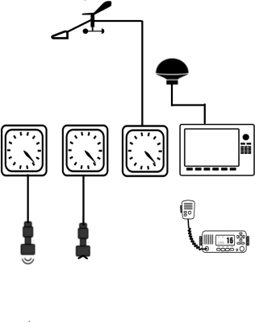
Figure 1. An analog system, sensors are connected to stand-alone
instruments
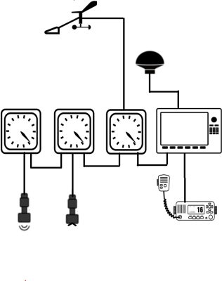
Figure 2. A connected network, e.g. NMEA 0183, Raymarine Seatalk, Silva
Nexus, Simrad.

Figure 3. A NMEA 2000 network, sensors and instruments connect to a
common bus
For connecting PC’s to early marine systems that are not interconnected, many sailors install multiplexers to combine data from multiple sources and to make it available to PC’s. On the other hand, gateways provide conversions from one protocol to another, such as Raymarine Seatalk to NMEA 0183, or NMEA 2000 to NMEA 0183 and also make it available to PC’s via WiFi or USB.
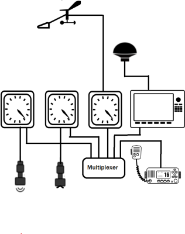
Figure 4. Multiplexer combines data from standalone devices.
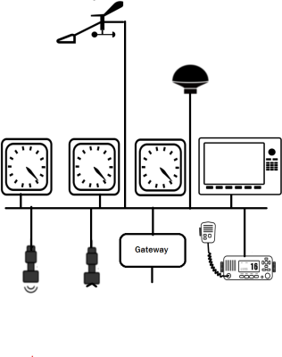
Figure 5. Gateways convert from one format to another, eg. NMEA 2000 to
NMEA 0183
Gateways and Multiplexers may be connected to PC’s via RS232 Serial Communications, Universal Serial Bus (USB), Ethernet or WiFi. Gateways and Multiplexers that support WiFi can be configured either as a WiFi client (sometimes referred to as STA mode) or as a WiFi Access Point (referred to as AP mode). Connecting OpenCPN to a gateway or multiplexer using either a wired Ethernet connection or wireless WiFi connection is similar to connecting your PC to your home network.
Network Terminology
-
Internet Protocol (IP), the communications protocol used on the Internet.
-
Transmission Control Protocol (TCP). One of the higher level protocols used to reliably transmit data over the Internet. It is a connection oriented protocol that ensures delivery of data based on a one to one communications mechanism.
-
User Datagram Protocol (UDP). Another higher level protocol, however unlike TCP it does not guarantee delivery or ensure data integrity. It is a connectionless protocol and has the benefit that it supports a one to many communications mechanism.
-
IP Address. Every device on an Ethernet or WiFi network has an address. This allows devices to identify one another allowing them to send and receive data with each other.
-
Port. As different applications on your PC can be communicating simultaneously with different services, each service uses a unique Port number to identify itself. For example web servers use port 80, email servers use port 25 and the default port number for NMEA 0183 is 10110.
On your home network, you are shielded from this complexity as services such as the Domain Name Service (DNS) maintain lists of IP addresses, Dynamic Host Configuration Protocol (DHCP) automatically assigns an IP address to your PC and applications determine whether they use TCP or UDP. For example when you view a web site such as www.opencpn.org, your browser knows to use TCP, Port 80 and it looks up the IP address of the servers hosting OpenCPN.
IP Addresses are normally displayed as a group of four digits. On your boat or home network, your devices will be assigned "private network addresses". There are three classes of private networks, the only difference being the number of devices that can exist on each. These are the address ranges for the three classes of private networks
Class A: 10.xxx.xxx.xxx
Class B: 172.YYY <font 11.6667px/inherit;;inherit;;inherit>*</font>
.xxx.xxx
Class C: 192.168.xxx.xxx
<font 11.6667px/inherit;;inherit;;inherit>*</font> YYY is between 16 and
31 included.
Most home or boat networks use Class C private networks. For example your PC may be assigned the address 192.168.1.233
While you have the choice of using either TCP or UDP, in most cases UDP is appropriate for your boat.
-
Slightly easier to configure.
-
Efficient, as no state needs to be maintained
-
One-to-many architecture distributes data efficiently.
-
For small networks such as boats, it provides sufficient reliability.
-
As sensors transmit data frequently (eg. once per second) it is resilient against infrequent loss of data.
-
All gateways, multiplexers and other navigation software (eg. Navionics on a tablet) support UDP, some may not support TCP.
OpenCPN offers a high degree of flexibility therefore be aware of the addresses of other devices on the network when configuring the protocol (UDP or TCP), port number etc.
1. Connect your PC to the WiFi network and determine its IP address.
Windows, Go to WiFi → Connected Access Point → Properties.
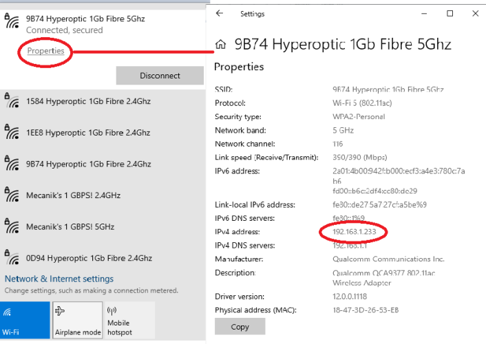
or from a Command Prompt, type ipconfig
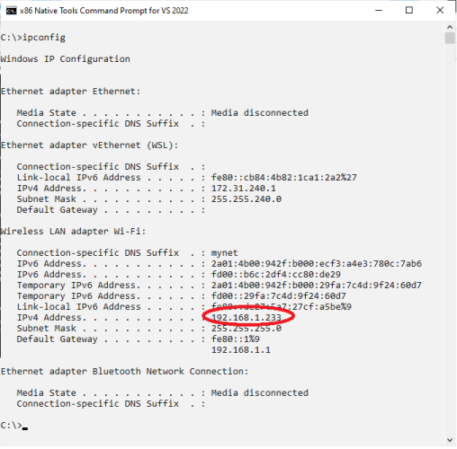
For MacOSX got to Wifi→Details
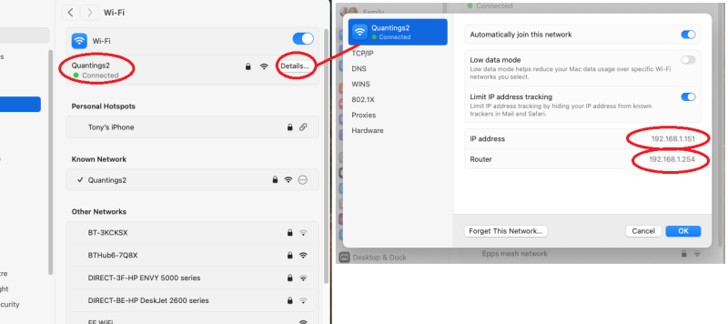
of from a Linux terminal window type ifconfig
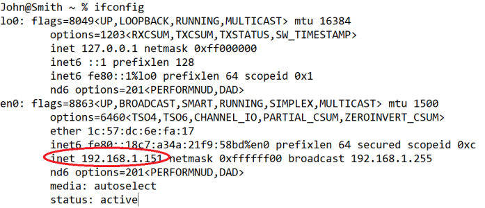
2. Identify the IP Address of the devices on the network
Identify the device that you wish to connect with. Please read the manual supplied with your gateway or multiplexer as it will describe how to configure the device, what protocols it uses, and how to determine its network details.
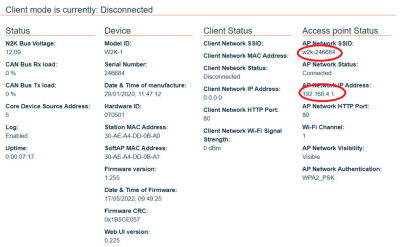
Figure 6. Example Actisense W2K-1 Gateway configuration showing network configuration
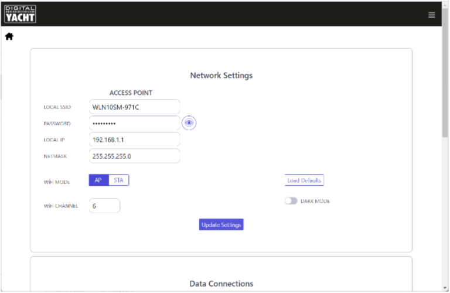
Figure 7. Digital Yacht Access Point configuration
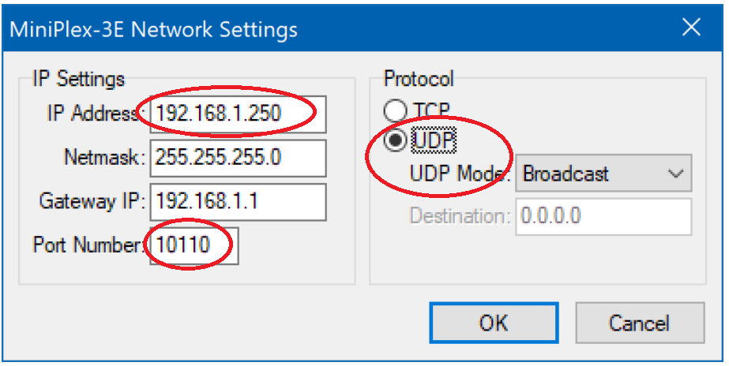
Figure 8. Shipmodul Network configuration screen. Note the port number (10110) and protocol (UDP).
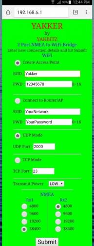
Figure 9. Yakbitz network configuration screen (Note the UDP port number in this case is 2000)
3. Add an OpenCPN UDP connection to receive data
Assume you have now obtained the following information from both your PC and the Gateway or Multiplexer.
-
Your PC is connected to the Gateway Access Point, SSID = W2K1-123456
-
Your PC’s IP Address is 192.168.1.233
-
The Gateway’s IP Address is 192.168.1.1
-
The subnet mask is 255.255.255.0 This means your private network has an address range from 192.168.1.0 - 192.168.1.255
-
We can deduce that the broadcast address is 192.168.1.255
-
The Gateway is configured to transmit NMEA 0183 data using UDP over port 10110
In this case, we can use either of three IP addresses on which to receive NMEA 0183 data over UDP.
-
0.0.0.0 This is a "special" address that means that OpenCPN listens on all network adapters.
-
192.168.1.255. This is the network broadcast address which means that OpenCPN listens on any adapter connected to the 192.168.1.0 network
-
192.168.1.233 This means that OpenCPN listens on the specific adapter which has been assigned that IP address
It is important to note that options 2 & 3 are the least flexible as the private network address and the address assigned to your PC may change, You can assign the same IP address to your PC by either configuring a DHCP Reservation on the gateway, or by configuring your PC to use a static address. These are advanced topics beyond the scope of this introductory guide.
From the Hamburger Menu, open the Options Dialog (the gearwheel icon), then select the Connection tab, then Add Connection
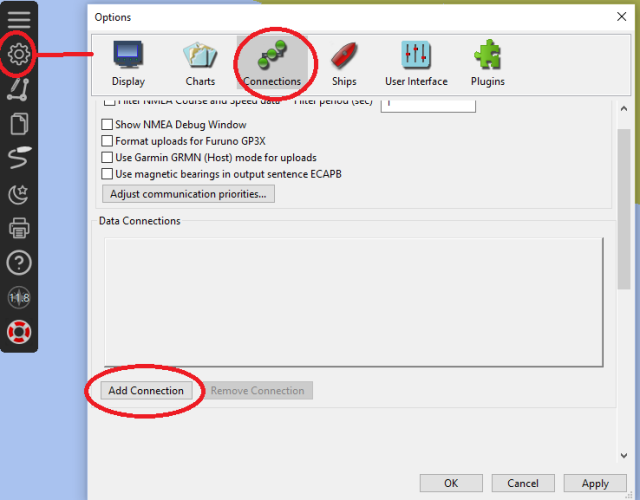
Add the connection.
Select the Network option. Then select UDP as the protocol and enter the IP Address and Port number. Ensure that the option "Receive input on this connection" is enabled. It is recommended to add a comment to help you identify the network connection. At this point, leave the other options with their default values.
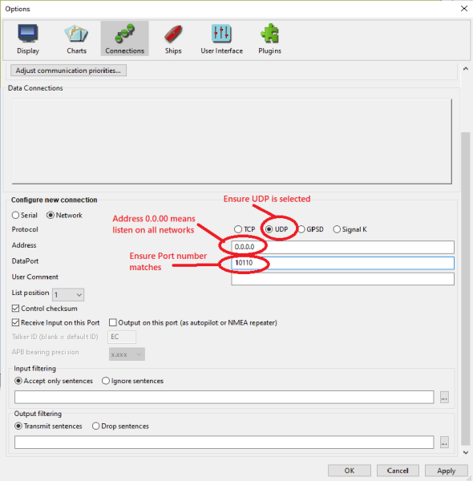
Once the connection has been saved, you can verify that OpenCPN is receiving data by viewing the NMEA Debug window.
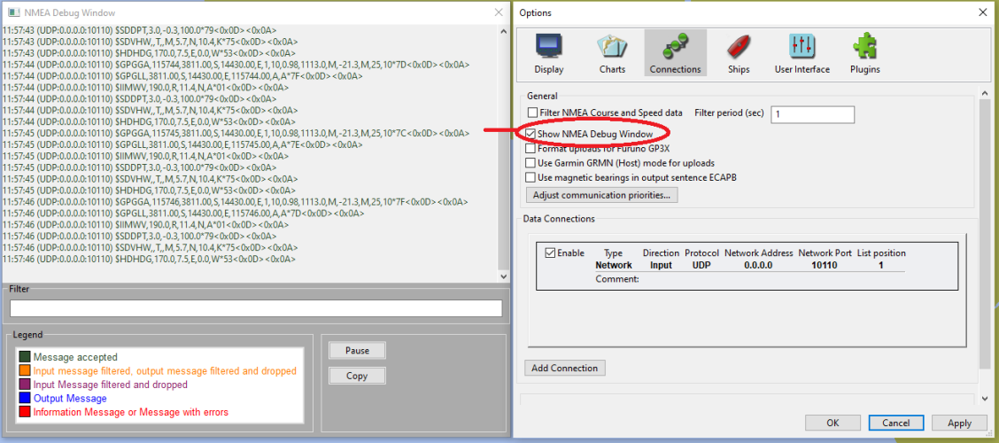
4. Add a UDP connection to transmit data from OpenCPN
One of the scenarios in which you will want to send data from OpenCPN to another device is to control an autopilot. Once a route or a waypoint has been activated in OpenCPN, you will want to send the steering commands to the autopilot to ensure it stays on course. When using a multiplexer or gateway, similar to creating a connection for receiving data, you will create a connection to transmit data.
To create an outbound UDP connection, in this scenario you have two ways to define the IP address:
-
Use the IP address of an adapter on your PC. This means that your PC will broadcast the data using UDP over the network to which that adapter is connected.
-
Use the broadcast address of an adapter on your PC. This means that your PC will determine which adapter is connected to the network for which that broadcast address belongs and then broadcast the data over that network.
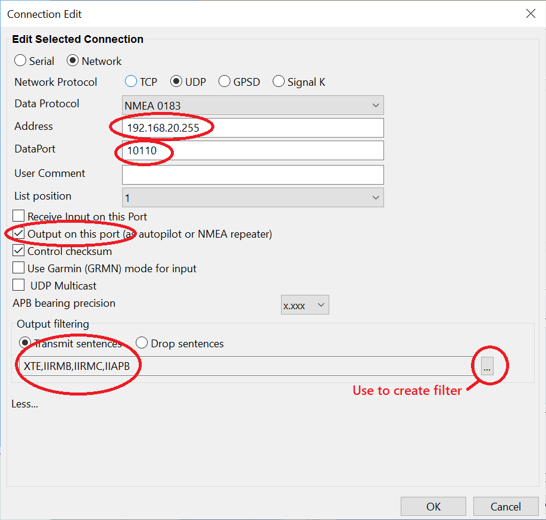
Screenshot illustrating an outbound UDP connection, using the network broadcast address, UDP port 10110 and a filter
In the scenario of controlling an autopilot, you would only want to transmit autopilot related data so as not to create a data loop. You achieve this by creating a filter that only allows the NMEA 0183 sentences APB, RMB and XTE to be transmitted. Further information about OpenCPN and autopilots can be found in the Autopilot Section .
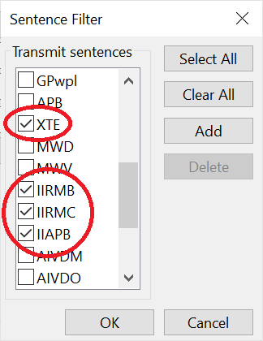
The NMEA 0183 output sentence filter.
If you then view the NMEA Debiug Window you can observe the fiter in effect, only thise sentences selected (in this case APB, RMB, RMC and XTE) are transmitted, all other outbound NMEA sentenes are filtered out.
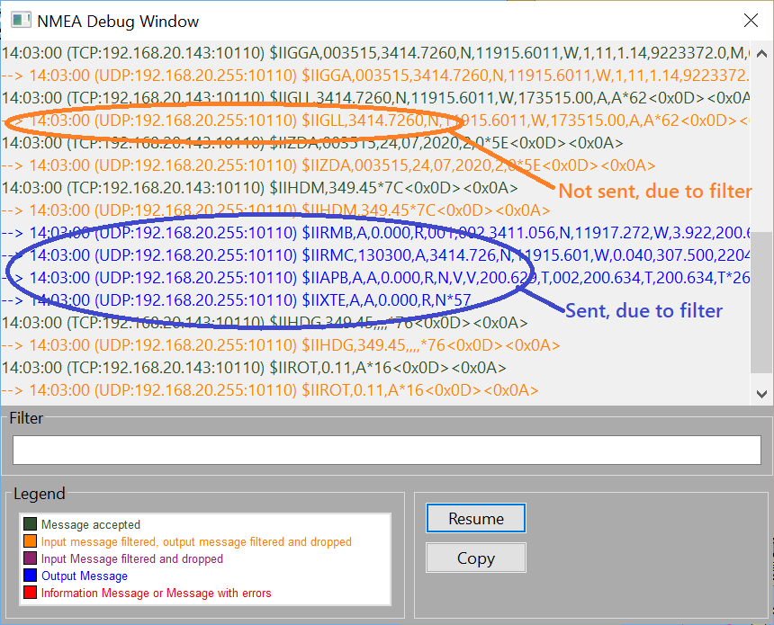
NMEA Debug Window showing received TCP data, outbound UDP autopilot data and the effect of the filter
5. Add a TCP connection to receive data
Unlike UDP, TCP is a connection oriented protocol that ensures reliable delivery of data between devices. If data is lost, for example because of a temporary network outage, the connection is re-established, packets are re-transmitted and re-assembled in the correct order ensuring that no information is lost. TCP introduces the concept of a client and a server and most multiplexers and gateways that support TCP act as servers. Servers listen for connection requests from a client and once the connection has been established, data is sent between clients and servers. Similar to UDP, you must know the IP address and port number used by the TCP server which you will normally obtain after having configured your multiplexer or gateway.
In the following screenshots, we will have determined the following information:
-
Our PC’s IP address is 192.168.20.101
-
The IP address of our multiplexer is 192.168.20.143
-
The TCP port number used by the multiplexer is 10110 (the default port number for NMEA 0183)
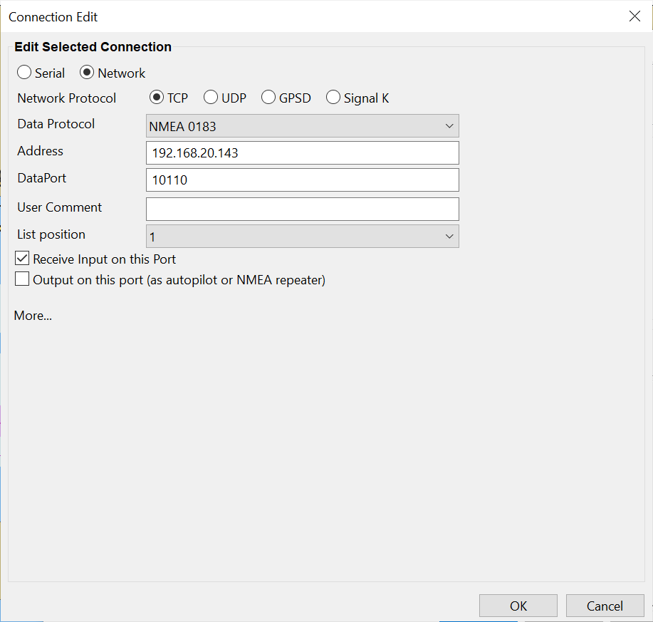
Screenshot illustrating TCP connection
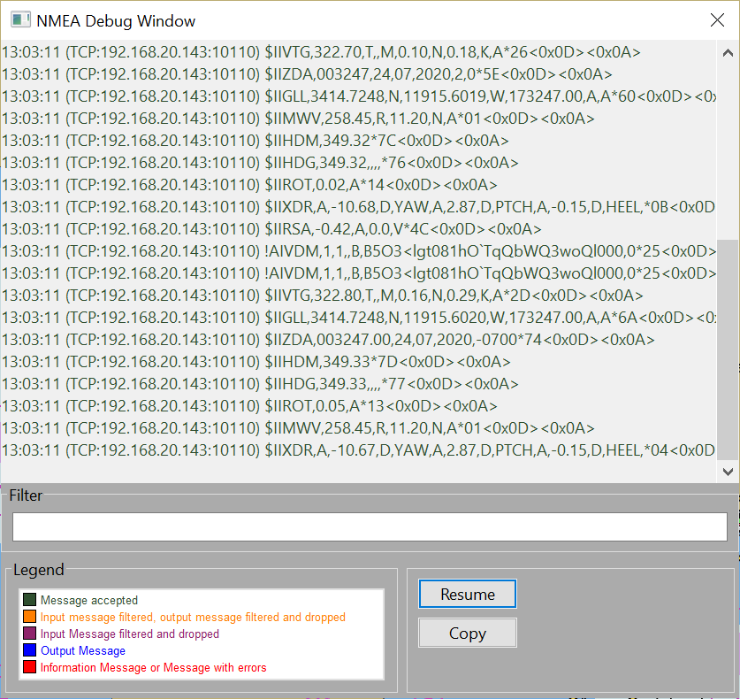
Screenshot illustrating NMEA Debug Window receiving data from a TCP connection
6. Add a TCP connection to transmit data
As described in the previous section, where an outbound UDP connection was created to send autopilot commands, depending on the capabilities of the gateway or multiplexer, you may wish to use TCP instead of UDP. In this case, the OpenCPN acts as the TCP Server and the gateway of multplexer are configured as a TCP client.
Assuming the following configuration:
-
Your PC is connected to the Gateway Access Point, SSID = W2K1-123456
-
Your PC’s IP Address is 192.168.43.80
-
The Gateway’s or multiplexer’s address is 192.168.1.
-
You have decided to use the default NMEA 0183 Port number 10110
Configure an outbound NMEA 0183 TCP Connection in OpenCPN using the IP address 0.0.0.0 (this means listen on all availble network interfaces) and the port number as 10110. As you just want to send autopilot related data, create an outbound filter that only transmits APB, RMB, RMC and XTE sentences.
Configure the "client" connection on the gateway or multiplexer to connect to the PC, using the PC’s IP Address 192.168.43.80 and the port number 10110.
Another scenario is if you wish to share NMEA 0183 data with another device such as a tablet running OpenCPN, Navionics etc. but only the PC has a physical connection to the marine data, either a direct serial RS232 or USB connection to the transducers, GPS receivers and AIS transceivers, or via a direct serial RS232 or USB connection to a gateway or multiplexer that does not support WiFi access.

In this example, assuming the following settings:
-
Your PC and the tablet are connected to the same WiFi Access Point, SSID = W2K1-123456
-
Your PC’s IP Address is 192.168.43.43
-
You have configured to use TCP port 10110
Configure an outbound NMEA 0183 TCP connection, using 0.0.0.0 for the IP address and 10110 for the port number.
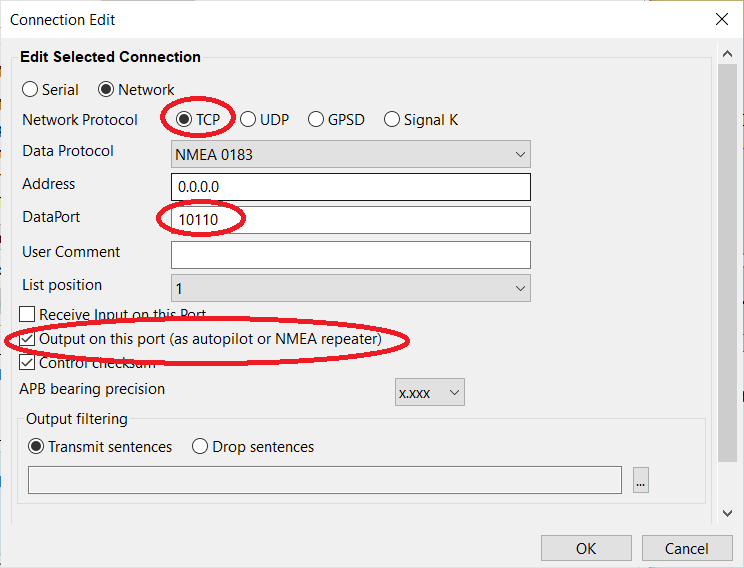
On the tablet, in this case running Navionics, you need to "pair" Navionics with the PC.
From the Menu, navigate to Connection and create a connection to the OpenCPN PC.
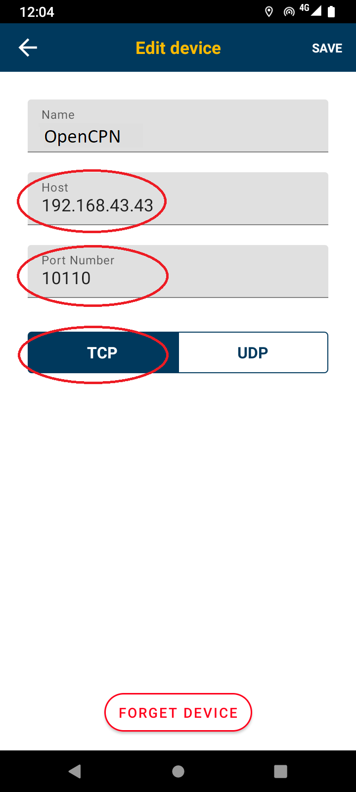
Once the connection has been established, you can view the status on the Connections screen
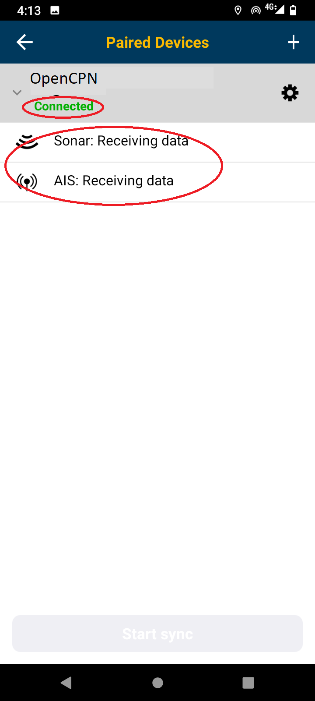
And on the Navionics chart you will see both AIS targets and the current depth.
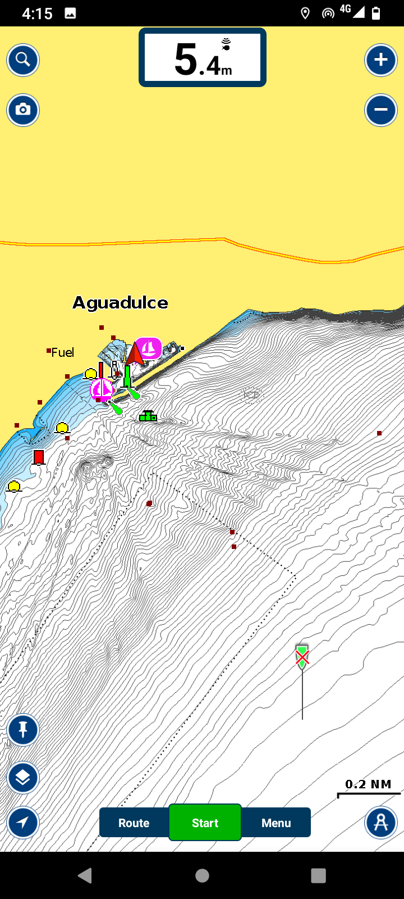
In this Navionics example, as it only displays depth and AIS data, you may want to configure the OpenCPN outbound TCP connection with a transmit filter that only allows VDM and DBT sentences (AIS targets and depth respectively).
There are further examples on how to configure other types of connection in /opencpn/supplementary_hardware.html where you will find examples on how to connect to Yacht Devices, QuarK, Oceanav, Actisense NGT-1: NMEA 2000 PC Interface, NGW-1: Actisense NMEA 2000 to NMEA 0183 Gateway NMEA Gateways and Multiplexers.